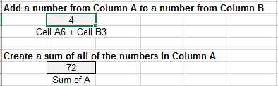
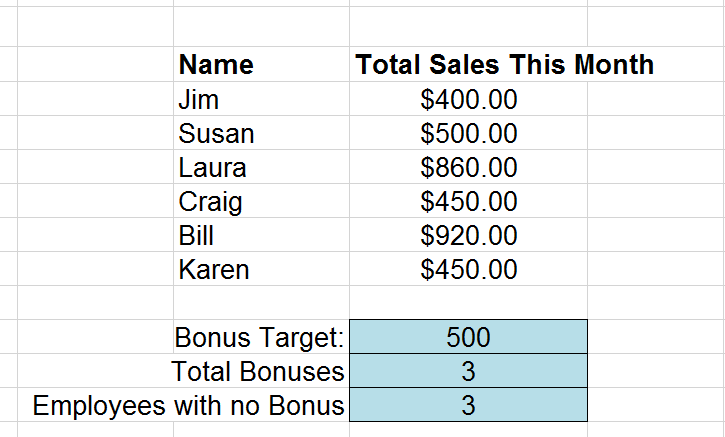
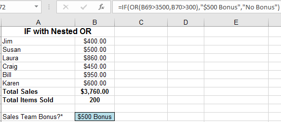
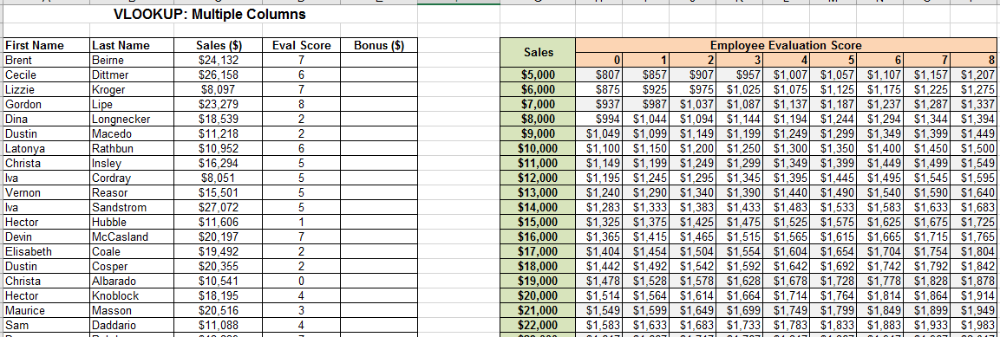

Excel 2
Advanced Functions
Introduction
Welcome to Excel 2: Functions! This course will build upon the basic skills you learned in the first Excel class. After this class, you will be able to create, manipulate, and analyze your own spreadsheets in multiple ways.
About this Class
Excel 2: Functions is one of the three intermediate Excel classes offered by Software Training for Students. These three classes (Functions, Data Visualization, and Analysis) are designed so you can take them independently in any order. During
this class, you will be introduced to some of Excel's built-in functions, the methods used to access all of its powerful functions, and how to utilize its calculation abilities to your advantage.
As of 2016, Microsoft Office has combined its PC and Mac versions to provide the same user experience to all users. However, one major difference remains, that it, the use of the Control and Command keys on Windows and Mac respectively for keyboard shortcuts. These keys essentially peform the same function and are used in conjuction with other keys to perform various tasks quicker. Your instructor will mention these interchangeably.
Topics
The following topics will be covered in this class:
-
Workbooks, worksheets, and linking data
-
Logical functions
-
Lookup, array and summary functions
-
Formulas tab
-
Keyboard shortcuts (Appendix)
Required Skills
You should have a basic knowledge of the Windows environment, and have taken Excel 1, or have equivalent experience.
Key background skills needed include familiarity with the following:
-
Excel terminology such as rows, columns, cells, and cell names
-
Entering and editing data
-
Using basic formulas (addition, subtraction, multiplication, division)
-
Using basic functions (SUM, AVERAGE)
Other Requirements
In addition to this manual, you will need to download the class files for the course and have access to a computer with Microsoft Office 2016. The class files can be downloaded at the STS website or will be provided by your instructor.
If you are working on an older version of Office, some features may be located in different locations or, on rare occasions, may be unavailable altogether. In such cases, setting up an Ask-a-Trainer appointment with an STS trainer via the STS
website would allow you to work through your specific questions. Otherwise, Microsoft Office is also available on most campus computer labs. Office 2016 can also be acquired free of cost as a student here: it.wisc.edu/services/office-365/
Workbooks, Worksheets, and Linking Data
In Excel 1, there was a brief introduction to Excel files, workbooks, and worksheets. In this course, you will learn how to manipulate and organize your worksheets using various options provided to you by Excel. These options can help to make
your worksheets more efficient and reduce errors when making changes.
Workbooks vs. Worksheets
A single Excel file (usually of .xls or .xlsx format) is called a "workbook", and by default contains three "worksheets". Each worksheet is a unique workspace in which data can be stored and manipulated. If desired, data can be linked between
worksheets. All worksheets in a workbook can be viewed near the bottom of the workbook in an area called the "Worksheet Tabs".
Working with Worksheets
To create a new Excel file, locate and open Excel 2016, and select Blank Workbook. If Excel is already running, you can create a new workbook by navigating to the File tab, selecting New from the options on the left, and selecting Blank Workbook.
Find the worksheet tabs by naviagting to the bottom-left of the Excel window. Click the encircled + icon to create new worksheets.
Worksheet options
Right-clicking on a worksheet tab gives you access to several options:
-
Insert adds a new worksheet, in the same way that clicking on the Insert Worksheet icon works.
-
Delete permanently removes the worksheet from the file. If done accidentally, exit the file without saving to reopen to the last saved state.
-
Rename allows you to change the worksheet's name.
-
Move or Copy allows you to reorder the tabs. Alternatively, you may also click and drag to move them.
-
View Code is covered in Excel 2: Analysis and Excel 3: Macros and VBA.
-
Protect Sheet allows the user to password-protect a sheet from accidental or unauthorized editing.
-
Tab Color provides the option to color-code different tabs. This is useful to organize worksheet into different categories.
-
Hide removes a worksheet from being visible in the Worksheet Tabs area.
-
Unhide reverses the effects of hide and displays any previously hidden worksheets.
-
Select All Sheets makes all worksheets in the workbook active so actions can be applied to all worksheets at once.
Referencing Data in Another Worksheet
Sometimes, it may be useful to take data from one worksheet and use it on a different worksheet. For example, you may want to have all your data on one sheet but your calculations on a different sheet, as shown below.
Display Data from Another Worksheet
-
Open the file Excel2-Functions.xlsx
Note that Excel will sometimes open files downloaded from the internet in Read-Only mode. This is done to protect users from possible malicious content. Click the Enable Editing button if you are prompted by Excel.
-
Have a look at the different worksheets. We will use the two columns of the Data worksheet to perform calculations in the Calculations worksheet.
-
Switch to the Calculations worksheet. This worksheet will be completed using information from the Data tab. First, we will simply insert a number from each column in the Data worksheet into the Calculations worksheet. All of our data is in cells A2:B11 in the Data worksheet.
-
In cell A2, Enter the following: =Data!A5.
-
Go to the Data worksheet, and Change the value of cell A5 from 6 to 4.
-
Return to the Calculations worksheet. Notice that the change to cell A5 of the Data worksheet was reflected in our Calculations worksheet. Using the '=<Worksheet_Name>!<Cell_Address>' formula, we
created a link to information in another sheet, rather than simply copying the information.
-
In cell C2, Type '=' and then Switch to the Data worksheet.
-
Click in cell B8 and press Enter while still in the Data Worksheet.
-
Navigate back to the Calculations worksheet. The cell in our Calculations worksheet now reflects the value of cell B8 from the Data worksheet. Note that the syntax of the referencing formula remains the same.
Using Worksheet References in Formulas or Functions
The same worksheet reference syntax can be used in formulas or functions.
-
Navigate to the Calculations worksheet.
-
In cell B6 Enter: =Data!A6 + Data!B3.
-
In cell B10 Enter: =SUM(Data!A2:A11).

This should give the sum of the values in Column A on the Data worksheet. Notice that you do not need to specifiy the worksheet for cell A11. This is because Excel understands that cells A2 to A11 is a unit of cells, and therefore must exist on the same worksheet.
So far, we have only created links to single cells in the Calculations worksheet. If we needed to link a large amount of data, this would be a very time-consuming process. Let's try a shortcut to create multiple links at once.
-
On the Data worksheet, Select cells B2:B11.
-
Copy the selected by cells by Pressing Ctrl/Cmd+C.
-
Switch to the Calculations worksheet and Click in cell B15.
-
Click on the little arrow beneath the Paste button on the Home tab.
-
Click on the Paste Link under the Other Paste Options area.
We have now linked multiple cells at once. Click on one of the cells and look at the formula bar; it should show the linked address.
As seen in this example, using data from a different worksheet for display or calculations is basically as simple as referencing data in the same worksheet. However, it can allow you to stay more organized and have a brief summary worksheet that
is easy to look at and understand.
Logical Functions
Excel 1 covered basic functions such as sum, min, max, and average, but Excel has many more powerful functions that do more than basic mathematical calculations. We will now practice with several of these functions and see how Excel can save us
time when dealing with large amounts of data. All of these functions utilize Excel's "live updating," so as the date reference changes, the functions will recalculate.
Switch to the Logical Functions worksheet for this section.
COUNTA Function
The first function we will try is the COUNTA function. This function counts the number of non-empty cells in a given range. A non-empty cell can be filled with a number, letter, or symbol to be counted by this function. If we only wanted to count
cells with numeric values, we would use the COUNT function.
Here, we will use the COUNTA function to determine the number of surveys we have received from our co-workers in cells A5 to A10. An X has been placed next to their name if they have returned our survey.
-
In cell B13 type: =COUNTA(B5:B10) and press Enter. You should now see that 4 of your coworkers have returned the survey.
-
Try typing in "yes" or "*" in cell B6. Notice that the function still counts all of the non blank cells.
COUNTIF Function
-
Select cell B28 and click the Insert Function button next to the formula bar.
This brings up the "Insert Function" dialog box. It is often convenient to use this method the first time you enter a formula. It walks you through the criteria each function requires and puts it into the required syntax. It can guide
you in the proper use of parentheses, periods, colons, and quotes.
-
In the Search bar at the top of the pop-up box, Type 'countif' and click Go.
-
Click OK.
The "Function Arguments" dialog box is displayed for the COUNTIF function. The arguments are listed with input boxes. When you click in the input boxes, an explanation of what the argument asks for is provided.
For the COUNTIF function, the formula's first input designates the range to perform the count on. The second input is the criteria the function will count.
-
Place your cursor in the Range box and then Select B20:B25 in the worksheet.
-
Type "yes" into the Criteria box, including the quotation marks.
-
Click OK.
Excel inserts the formula: =COUNTIF(B20:B25,"yes") into cell B28. If you did not include the quotation marks around yes, Excel will automatically insert them for you. This is because we want Excel to compare explicitly to the word spelled y-e-s. If quotes were omitted, Excel would believe that yes was one of its keywords (like function names) and try to perform the yes command, which would result in an error. For this reason, it is convenient to use the Insert Function button in order to prevent syntax errors.
For the remaining examples on this worksheet, the actual syntax of each function is provided in the exercise steps. Despite this, you are encouraged to insert the functions by hand, using the insert function button, or using the drop down menu that appears when you start typing a function. Note that copying and pasting functions from this manual may result in errors, as Excel only works with straight quotation marks. It is best to get experience with all methods. Your instructor will be switching between both methods and can answer any specific questions that may arise.
-
In cell B29 Insert the function: =COUNTIF(B20:B25,"no"). The function counts the number of "no" responses to be two.
COUNTIF can also be used to count cells in a range that meet certain numeric criteria. In the next example we will see how many of our employees receive a bonus by selling at least $500 worth of merchandise.
-
In cell E28 Insert the function: =COUNTIF(E20:E25,">=500").
This will count the number of employees in range E20:E25 that have greater than or equal to $500 in sales. To evaluate the special expression with >= we again need to use quotation marks.
Next, we will count the number of employees that will not receive their bonus this month.
-
In cell E29 Insert the function: =COUNTIF(E20:E25,"<500")
The criteria of the COUNTIF function can also be another cell. For instance, instead of typing $500 directly into both equations, COUNTIF can look for the number in a different cell. The advantage of this is that it allows you enter $500
only once and then makes it easier to change. Let's try this out.
-
In cell I27 Enter the target bonus of 500.
-
In cell I28 Insert the function: =COUNTIF(I20:I25,">="&I27).

This tells Excel to give a bonus if the sales are greater than or equal to the bonus target, in this case cell I27 which is $500.
-
In cell I29 Insert the function: =COUNTIF(I20:I25,"<"&I27).
-
Try Changing the Bonus Target in cell I27 and see how our results update accordingly.
OR and AND Functions
We will cover two more commands that also perform a test based on criteria that we define, but they will return a value of TRUE or FALSE instead of a count. These two functions are called OR and AND. Both of these functions can test multiple cells
for different criteria. The only difference is that the OR function only needs one value in a list to be true to return a TRUE value. The AND function needs all values in a list to be true to return a TRUE value. The following examples will
show how this works.
We will test whether our sales team met the quota for the month. In this example, the quotas are Total Sales of over $3500 OR over 300 Total Items Sold. Here, we don't care which quota was met.
-
In cell B45 Insert the function: =OR(B40>3500, B41>300).
Since we sold more than $3500 this month, the OR function returns a value of TRUE. Notice that it doesn't matter that our second quota of 300 items sold was not met.
-
Change cell B41 to 350 and notice that even when both quotas are met, OR still returns a TRUE value.
We will now use the AND function to make sure that both of our quotas are met before a TRUE value is displayed.
-
In cell F45 Insert the function: =AND(F40>3500, F41>300).
Because the Total Items Sold is still under the quota of 300, AND returns a value of FALSE.
-
Type 350 in cell F41 to see how this will change the answer in cell F45.
OR and AND functions are very basic, but can be combined with other functions to become more powerful.
IF Functions and Nested Functions
The IF function allows us to perform logical operations and return any value we desire (instead of just True & False). A good way to think this logic through is: 'If X is true, then return Y'. Likewise: 'If X is false, then return Z'. To start
things off with the IF function we continue with our Bonus Sales Examples. We are going to tell Excel that if our Total Sales are greater than $3500, then the Sales Team gets a $500 bonus.
-
In cell B58 Insert the function: =IF(B56>3500,"$500 Bonus", "No Bonus").
The result now returns "$500 Bonus" instead of just TRUE.
-
Change cell B53 to 0.
Notice that now the result is 'No Bonus.'
We are now going to use a function within a function, also known as "nesting". More specifically, we will nest an OR function within an IF. In this example, if Total Sales are equal to or greater than $3500 or if Total Items Sold are equal to
or greater than 300, then a Bonus is given.
-
In cell B72 Insert the function: =IF(OR(B69>3500,B70>300),"$500 Bonus", "No Bonus").

-
Change cell B66 to 0.
Make sure Total Sales are less than $3500 and make sure Total Items Sold are still less than 300. The result is changed to 'No Bonus' as the Total Sales criteria is no longer met.
Next, we will nest an IF function within another IF function. The first IF function tests whether or not Total Sales is equal to or greater than $3500. If Total Sales are equal to or greater than $3500, then a result of "$500” will show.
Normally, as in our previous example, a simple result of "No Bonus” would be used if Sales were below $3500. However, let's say that we still want to give a smaller bonus of $100 if Total Sales were at least $3000. To do so, we will now use
another IF function in place of the "Result if False” entry in our original IF function. This is telling Excel to perform a second Logical Function instead of displaying a response of our choosing.
-
In cell B85 Insert: =IF(B83>3500,"$500 Bonus",IF(B83>3000,"$100 Bonus","No")).
We get a bonus of $500 because our total sales are above $3500.
-
Change cell B80 to 0.
Note that we still get a bonus of $100 because our total sales are still above $3000.
-
Change cell B78 to 0.
Now Total Sales are neither above $3500 nor $3000. Since neither requirements are met, no bonus is given.
By combining two IF functions, Excel was able to perform some relatively complicated logic for us. Through various function combinations, you can utilize Excel's logic calculations to perform comparisons that will update as your data changes.
Lookup, Array, and Summary Functions
We have explored some of Excel's logical functions, but there are many other categories that we haven't used yet. We will now learn how to lookup values, change data's orientation, and summarize sorted data.
VLOOKUP
It is often helpful to keep data that we must refer to frequently in a table. VLOOKUP allows us to access that data based on a known value. In other words, this function searches for a value in the first column (the left- most column) of a table
and returns a value in the same row from another column in the table.
We will explore this new function by continuing our Sales Bonus examples. In this case we are going to look up what our employees' bonuses (the returned value) should be based on their sales (the known column value).
VLOOKUP: One Input
Switch to the VLOOKUP worksheet. The blank Bonus ($) column is what we will be filling in. The values that will be filled in will be found in the Bonus Table. The VLOOKUP function is how we will do this.
-
Click in cell D6.
-
Click on the Insert Function button.
-
Search for VLOOKUP and Click Go, then OK.
-
In the Lookup_Value form, Enter C6.
Lookup_value: The value to be found in the first column of the Bonus Table. In this instance, cell C6 provides the Sales number that corresponds to a given bonus.
-
In the Table_array form, Enter cells $F$7:$G$32.
Table_array: The table in which data is retrieved from. In this instance, cells F7:G32 make up the table.
-
In the Col_index_num form, Enter 2.
Col_index_num: The column number in the table from which the matching value should be returned. In this instance, we are looking for the Bonus that matches up to a given Sales. Bonus is the 2nd column from the left, so 2 is the number
used.
-
AutoFill the remaining blank cells in column D with the VLOOKUP function by double-clicking the small green square in the bottom right corner of cell D6 when it is active.
-
Check a few employee Bonus values to see if they agree with the table.
-
Change the value of cell C6 from $24,132 to $10,000. The bonus decreases from $1,928 to $1,000.
Take the time to think about how this function works, as it is rather complicated. Review what each parameter in the function does and ask your instructor questions if you do not understand. It often takes two or three explanations to really understand
how VLOOKUP works.
VLOOKUP: Two Inputs
Sometimes a given value is based on two different inputs (tax tiers are based on both income and number of dependents, for example). Now we are going to recalculate our employee bonuses based on both Sales and an Employee Evaluation score. The
overall function and arguments are the same but here we must be slightly clever.
Earlier, we chose our 3rd argument, "col_index_num” by default: it was the only other column other than our original "lookup_col” value. Now we must find a way to correspond the Evaluation Scores to the Columns in our table.

Scroll down to the Multiple Columns exercise in the VLOOKUP worksheet. The arguments for the VLOOKUP function in this example are described below:
-
The 1st argument "lookup_value" is the value to be found in the first column of the Bonus Table. In this instance cell C53 provides the Sales number that corresponds to a given bonus.
-
The 2nd argument "Table_array" is the table in which data is retrieved from. In this instance cells G54:P79 make up the table.
-
The 3rd argument, "Col_index_num" is the column number in the table from which the matching value should be returned. Unlike before, we have multiple columns to choose from. Cell D53 is referenced in the argument because this is the Evaluation
score for our first employee. However, the score itself does not match up with the column numbers in our table (the 1st column is Sales, the 2nd column is a score of 0, etc.). You should notice that the actual column number is always
2 ahead of the Score in our table. This is why for ‘Col_index_num’ we enter D53+2.
-
In cell E53 Insert the function: =VLOOKUP(C53,$G$54:$P$79,D53+2).
You should see the result of $1,999 in cell E53.
-
Autofill the remaining cells in Column E with the function from cell E53
-
Check a few employees Bonus values to see if they agree with the table for both their sales total and evaluation score.
-
Change the value of cell D53 to $0.
You should see the result of $1,999 in cell E53 update to $1,649.
In this example, we were able to add an extra dimension to the VLOOKUP function with a little ingenuity. In order to become an expert with Excel functions, you need to be willing to think outside the box and use them in new and creative ways.
Transpose
When organizing data in a spreadsheet environment, one must usually choose between a vertical or horizontal orientation. Depending on the volume, size, and format of your data on your worksheet, it may be beneficial to switch the orientation.
The Transpose function allows us to swap our row data and our column data quickly.
To begin, switch to the Transpose worksheet and examine the examples given.
Transpose using Copy-Paste
There are two different methods to transpose your data in Excel. The first is through a basic copy and paste operation. In the Copy and Paste exercise, note the basic set up and simple functions used in Columns E and F.
-
Select cells A20:F26 and Press Ctrl/Cmd+C to copy.
-
Select cell A29. This is where we will be transposing our table.
-
Navigate to the Home tab. Click the arrow underneath Paste, and locate and click Transpose in the drop-down menu.
-
Examine what the operation has done.
We have just inverted the values between our rows and columns. The values and formulas have also been preserved and reference the same values as before. While this copy-and-paste operation is handy it does have a major limitation: if we were to change a value in our original table, it would not update the new table accordingly. One solution to this is to use the transpose function.
Transpose using the Built-In Function
Up to this point, we have used functions and formulas that either manipulate single pieces of data (cells) at a time or return a single result. However, it is sometimes necessary to perform many calculations on one or more items in an array (or
a collection of single pieces of data). The Transpose function is such a function and will require several new steps.
-
Scroll down to the TRANSPOSE: Function exercise.
-
Select cells A41:F47 but do NOT release the down-clicked mouse.
Note the dimension of the selected array in the Name Box which displays 7R x 6C and memorize this. We have selected 7 rows and 6 columns.
-
Click in cell A50 and drag to select 6 rows and 7 columns. You will see 6R x 7C in the Name Box.
-
Do NOT click off these cells: while they are still selected begin to Type: =TRANSPOSE(.
-
Select cells A41:F47 as the array that we wish to transpose.
-
While still editing the formula, Press Control/Command+Shift+Enter. This applies the current function or formula to all selected cells.
-
Change the value in cell B42 to 0. Notice the automatic change in the referenced array (A51) and the other cells that use that cell as an argument for a function (cells E42 and B54).
You have just performed your first array function in Excel. Note that you are unable to change any cell in the range A50:F55. This collection of cells is now treated as a single object.
Text Formatting
Strings of text in Excel can be formatted to add decimal places and points, commas and currency signs. We can also concatenate text, that is, join different text elements into singular strings. This is useful to output sentences in Excel.
TEXT function
The TEXT function converts a numeric value to text and lets you specify the display formatting by using special format strings. This function is useful in situations where you want to display numbers in a more readable format, or you want to combine numbers with text or symbols.
The TEXT function syntax TEXT(value, format_text) has the following arguments:
-
value: A numeric value, a formula that evaluates to a numeric value, or a reference to a cell containing a numeric value.
-
format_text: A numeric format as a text string enclosed in quotation marks, for example "m/d/yyyy" or "#,##0.00". See the following sections for specific formatting guidelines.
Switch to the TEXT worksheet and find the TEXT() function exercise. In this exercise, we will learn how to format numbers and dates, such as changing decimal places, and adding commas and dollar signs.
Firstly, we will change the number of decimal places visible for a given number. As shown below, we can do this using either zeros (0) or the pound sign (#) as parameters. The key difference between the two is that the # parameter looks for a number in its position, and if there is none, it does not display anything. However, if a 0 parameter does not find a number in its position, it displays a zero in its place.
-
Select cell B4 and type =TEXT(A4,"#.##"). Press Enter.
-
Select B6 and type =TEXT(A6,"0.00"). Press Enter.
We get the same result in both cases above. However, the next two steps will elucidate the difference between the two.
-
Select B8 and type =TEXT(A8,"#.##"). Press Enter.
-
Select B10 and type =TEXT(A10,"0.00"). Press Enter.
No zeros were displayed in cell B8 as the # parameter did not find a number in its position. We recommend using zeros so this doesn't occur.
In the next three entries of the table, we will go over changing a number into currency format.
-
Select B12 and type =TEXT(A12,"#,###"). Press Enter.
-
Select B14 and type =TEXT(A14,"#,###.00"). Press Enter.
-
Select B16 and type =TEXT(A16,"$#,###.00"). Press Enter.
Next, we will go over some date formatting options.
-
Select B18 and type =TEXT(A18,"mm-dd-yyyy"). Press Enter.
-
Select B20 and type =TEXT(A20,"dddd"). Press Enter.
-
Select B22 and type =TEXT(A22,"mmmm dd, yyyy"). Press Enter.
Concatenating text using "&"
Strings of text can be concatenated or combined using the ampersand (&). In the next exercise, we use "&" to combine text into readable sentences. Not the use of blank space within quotation marks to display spaces between words in the "Hello World!" example.
-
Select E30 and type =A30&" "&B30&" "&C30&" "&D30&".". Press Enter.
-
Select E31 and type =A31&" "&B31&" "&C31&" "&D31&".". Press Enter.
-
Select E32 and type =A32&" "&B32&" "&C32&" "&D32&".". Press Enter.
Concatenating formatted text using both "&" and TEXT()
In this last exercise, we will combine the methods of text formatting and concatenating form the previous two exercises to create long strings of the given data.
The syntax for this is:
=<Name>1&" "&<Name2>&" earned "&TEXT(<Amount>,"$#,000.00")&" on "&TEXT(<Date>,"mmmm dd, yyyy"),
where the TEXT function for the Amount adds a Dollar sign, commas every three digits and limits the decimal places to two, and the TEXT function for the Date converts the "mm/dd/yyyy" format to the "Month_name Date, Year" format.
-
Select cell E40 and type =A40&" "&B40&" earned "&TEXT(C40,"$#,###.00")&" on "&TEXT(D40,"mmmm dd, yyyy"). Press Enter.
-
Select cell E41 and type =A41&" "&B41&" earned "&TEXT(C41,"$#,###.00")&" on "&TEXT(D41,"mmmm dd, yyyy"). Press Enter.
-
Enter your own data in row 42 for more practice if you would like.
-
Select cell E42 and type =A42&" "&B42&" earned "&TEXT(C42,"$#,###.00")&" on "&TEXT(D42,"mmmm dd, yyyy"). Press Enter.
Your Formatted Combined String column should look like the image above. You may change the formatting options and try out various arguments for the TEXT function. You can find all the text formatting arguments here.
Formulas Tab
As has been seen up to this point, Excel is an incredibly powerful tool for organizing, analyzing, creating, and manipulating numeric data. We have already used multiple methods to access these functions: typing it in ourselves, using the insert function button, and using the drop-down menus when typing. The last method we’ll cover to insert functions is on the Formulas tab.
The Formulas tab gives us access to Excel’s entire Function Library, much like the Insert Function button. Additionally, it can help us understand what our functions are doing, and fix errors that may be causing them to behave incorrectly.
Additonal Relevant Functions
We have covered basic formulas (addition, multiplication, etc.) and a wide sampling of functions (SUM, VLOOKUP, SUBTOTAL, etc.) up to this point. There are quite a few more basic and advanced functions that exist and are important to be aware of in Excel. Often you will want to either order, round, or convert numbers in your spreadsheets; these functions will be introduced using the formulas tab (the other insertion methods previously introduced are valid as well).
Ranking
Sometimes we need to know the rank of our data (where each data value lies in comparison to all other values). The RANK.EQ function does this
-
Switch to the More Functions worksheet and click on the Formulas tab on the ribbon.
-
Select cell B18.
-
In the Formulas tab, select More Functions > Statistical.
-
Scroll through the list and locate and select RANK.EQ.
-
Once the Function Arguments window opens, select cell A18 for the Number argument.
-
Select range A18:A117 as the Ref argument. (Be sure to add dollar signs to make it an absolute reference so we can use autofill.)
-
The Order argument is left blank. Click OK.
-
Autofill the equation for the rest of column B.
Now, we can see where each value lies in relation to all other values without having to sort. This may be especially beneficial if a different order to your data is important.
Rounding numbers
The data values provided have many decimals. We can round those off to any amount we choose using the ROUND function. Although it appears similar to using the increase/decrease decimal buttons on the Home tab, do not confuse the two. By using the increase/decrease decimal buttons, you are only changing the number of decimal places that Excel displays (but all decimal values remain in memory). On the contrary, the ROUND function actually changes the value in Excel’s memory to only contain the specified number of decimal places. This distinction can make a difference in calculations for which precision is required. Let’s say we only need our data values to the nearest 100th (2 decimal places).
-
Click on cell C18.
-
In the Formulas tab, Select Math & Trig and then locate ROUND.
-
Once the Function Arguments window opens, select cell A18 for the Number argument
-
Enter 2 as the Num_digits argument and click OK.
-
Autofill this formula for the rest of column C.
-
Use the Decrease Decimal Button on the Number panel in the Home tab to hide all the extra zeros.
Unit Conversions
For many types of data there are various unit systems that can be used to quantify a measurement (temperature: Fahrenheit/Celsius, length: foot/meter, etc). Excel has a built-in function, CONVERT, which can switch your data between a large list of different unit systems. For this exercise, let’s treat the data points as Temperature measurements in degrees Fahrenheit that we want to convert to degrees Celsius.
-
Select cell D18.
-
Using the formula bar, Insert the formula: =CONVERT(A18,”C”,”F”).
The drop-down menu for this function is useful to know the different units available. The drop-down menu feature does not appear in OSX.
-
Autofill the function for the rest of column D.
Now all the data values are converted from degrees (C) to degree (F). Look at the values in row 23 to check the conversion: 0 degrees Celsius does equal 32 degrees Fahrenheit (the freezing point of water).
Large and Small Functions
At times we will want to know the Kth largest or smallest value in our data, where we can specify the magnitude of K (say, the 10th). We can use functions instead of having to sort our data and count up/down by ten places.
-
Select cell E18.
-
Click on the Insert Functions Icon and Search to find LARGE function.
-
Select the range A18:A117 for the Array argument.
-
Enter 10 as the K argument (we want the 10th largest number).
-
Repeat in cell F18 for the small function: =SMALL(A18:A117,10).
Internally, the function orders the array as a list in numeric order and selects the 10th largest data point (638.42) and the 10th smallest data point (21.30).